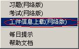
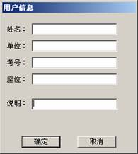
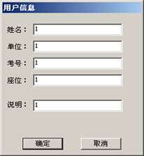
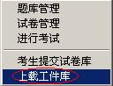
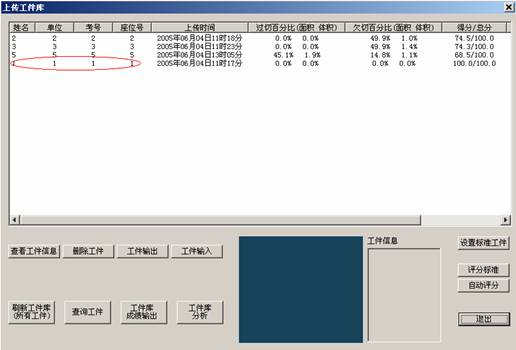
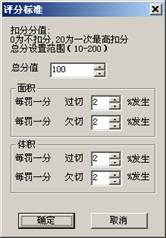
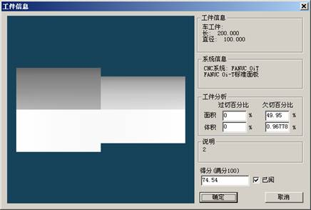
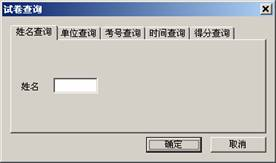
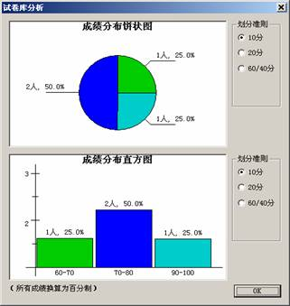

在（图3）界面中选中姓名为1的用户（教师）→单击按钮（此时，老师所加工的工件即设置为标准工件）→单击
| 上传工件库 |
“上传工件库”功能的应用方法:
1.教师和学生都打开相应的操作软件
（例如：Fanuc 0i-T）→根据相同的零件图各自编写一程序→然后进行加工→加工完毕后选择

的“工件信息上载（网络版）” →出现如（图1）所示画面，
（图1）
（图2）2.上载工件库
在教师机端弹出“Monitor”窗口→单击“考试”的下拉菜单→选择

的“上载工件库” →出现的画面如（图3）所示
?（图3）
3．工件与老师的相比较
假设姓名为1的用户是教师，其余的用户为学生，我们可以把老师所加工的工件作为标准工件，学生所加工的工件与老师的相比较，然后自动评出学生的成绩，具体做法为：
在（图3）界面中选中姓名为1的用户（教师）→单击按钮（此时，老师所加工的工件即设置为标准工件）→单击 按钮→用户为学生的部分即自动评出成绩（可通过列表为处查看）。
按钮→用户为学生的部分即自动评出成绩（可通过列表为处查看）。
4．修改评分标准
也可通过修改评分标准来获得不同标准情况下学生的考试成绩，具体做法为：
单击按钮→出现如图4所示画面

（图4）→通过点击选项右边的小箭头来修改评分的标准→单击（此时，评分的标准已被更改成功）→单击按钮，刚才评出的学生成绩将以新的评分标准评比出新的学生成绩。
5． 按钮功能：
按钮功能：
首先在“上传工件库”中选中一用户，然后单击按钮，即可查看所选用户的工件信息，如（图5）所示：

（图5）
6． 按钮功能：
按钮功能：
在“上传工件库”中选中一用户，然后单击→按钮，即可删除所选用户的工件信息。
7． 按钮功能：
按钮功能：
在“上传工件库” 中选中一用户，然后单击按钮→出现“另存为”对话框→输入文件名和选择存储位置→单击按钮即可完成工件信息的输出。
8． 按钮功能：
按钮功能：
在“上传工件库”中单击按钮→出现一“打开”对话框，选择相应的文件路径后打开相应的文件名→单击按钮即可完成工件信息的输入。
9．按钮功能：
在“上传工件库”中单击 按钮后系统将自行刷新用户信息。
按钮后系统将自行刷新用户信息。
10． 按钮功能：
按钮功能：
在“上传工件库”中单击按钮后→出现如图6所示画面

（图6），此“试卷查询”可通过“姓名、单位、考号、时间和得分”进行相应的试卷查询。
11． 按钮功能：
按钮功能：
在“上传工件库”中单击按钮后→弹出“另存为”对话框，可把“上传工件库”中的所有用户信息输出并进行存储。
12．按钮功能：
在“上传工件库”中单击 按钮后→弹出如图7所示对话框
按钮后→弹出如图7所示对话框

（图7）→通过选择不同的划分规则可在饼形图和直方图查看用户成绩分布状况。